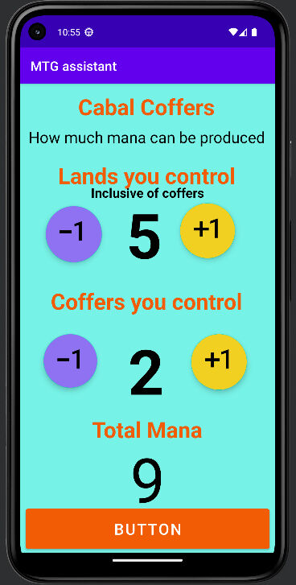

Android Development

SafetyGlasses.com
Android application that enables users to measure their pupillary distance and virtually try on 3D models of glasses using augmented reality.
Key Features:
- Pupillary Distance Measurement: Utilizes OpenCV to accurately measure users' pupillary distance through the camera.
- 3D Glasses Models: Incorporates interactive 3D objects to display various glasses styles.
- Augmented Reality Try-On: Allows users to see how different glasses look on their face in real-time AR before making a purchase.
Technologies Used:
- Programming Language: Java
- Libraries & Tools: OpenCV for image processing, AR capabilities for virtual try-on

Magic the Gathering Companion
Android application that allows users to track their board states during a game of MTG.
Key Features:
- Life Tracker: Allows users to track life totals.
- Coffers Mana: Allows users to track and calculate the amount of mana produced off cabal coffers.
- Academy Manufactor: Allows users to track the number of artifact tokens they control produced off academy manufacturer.
Technologies Used:
Programming Language: Java